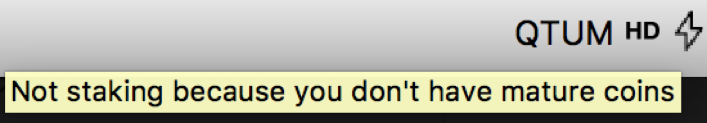
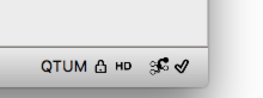

Simplechain Staking（PoS mining）Tutorial
Simplechain employs PoS (Proof of Stake) consensus mechanism, which is different from Bitcoin's PoW (Proof of Work). The mining process in PoS system is called staking. The block producer will get 4Simplechain, as well as the transaction fees and gases as block reward. So the real reward is usually more than 4Simplechain in total.
Basic requirements for staking：
- Run a Simplechain fullnode, and keep online (Since Simplechain is using PoS, we don't need any mining machine, just PC or even Raspberry Pi can run a fullnode);
- Have some Simplechain in the wallet (fullnode)（Any amount of Simplechain can be used for staking, more Simplechain means higher possibility to stake).
If you have no Simplechain yet, please get some from market before you doing following staking settings.
Currently, Simplechain Core wallet is the only wallet that support Simplechain PoS staking. Note that other wallets like mobile wallet and Simplechain Electrum are not able to stake for the time being.
Two ways to stake:
- Method 1：Staking with Simplechaind, using command line, suitable for Linux/OSX/Windows/Raspberry Pi users who are familiar with command line tools.
- Method 2：Staking with
Simplechain-qtwallet, with GUI, suitable for common users.
Either way works in the same way for staking, so you can choose either method you like.
Method 1：Staking with Simplechaind (command line)
1. Run Simplechaind
To run Simplechaind, please refer to"How to deploy Simplechain node".
Follow the guidance to run Simplechaind:
./Simplechaind -daemon
Staking is default on for Simplechaind, so no need for other options if you only want to stake.
2. Send some Simplechain to your wallet
First you can generate a new address with：
./Simplechain-cli getnewaddress
This will generate a new address with Prefix 'Q'. You can send some Simplechain to this new generated address for staking. You can generate as many addresses as you like, and send arbitrary Simplechain as you like for staking.
Note：The coin should wait for 500 blocks before being able to stake, i.e. about 17 hours to MATURE..
After the Simplechain node syncing to the latest block, you can check current balance with ./Simplechain-cli getbalance or get utxo list with./Simplechain-cli listunspent。（what is UTXO?）。
Please do following steps after your coin is mature.
3. Check staking info
Check current staking info with：
./Simplechain-cli getstakinginfo
You might get the result like this：
{
"enabled": true,
"staking": true,
"errors": "",
"currentblocksize": 1000,
"currentblocktx": 0,
"pooledtx": 5,
"difficulty": 5683612.564280176,
"search-interval": 46,
"weight": 53206430,
"netstakeweight": 2278172497819029,
"expectedtime": 5480654870
}
enabled means if your wallet have enabled staking, it should be true by default. staking means if your wallet is currently staking (mining). weight stands for the amount of Simplechain that is staking right now, with unit 10^-8Simplechain, here in the example, we have 0.532Simplechain staking. expectedtime stands for the expected time that you will get a reward, the unit is second.
4. How to stake if the wallet is encrypted？
If your wallet is not encrypted, you can skip this section. However, for security, we recommand you encrypt your wallet. (How to encrypt?)
Simplechain wallet can be encrypted with encryptwallet. However, staking will be stopped when it is encrypted. For example, ./Simplechain-cli getstakinginfo for a encrypted wallet：
{
"enabled": true,
"staking": false,
"errors": "",
"currentblocksize": 1000,
"currentblocktx": 0,
"pooledtx": 94,
"difficulty": 5788429.670171153,
"search-interval": 0,
"weight": 53206430,
"netstakeweight": 2438496688951881,
"expectedtime": 0
}
See staking turns to false, which means wallet is not staking.
You can use walletpassphrase to unlock wallet for staking：
./Simplechain-cli walletpassphrase "<your passphrase>" 99999999 true
The meaning of the arguments can be found in the documents "How to encrypt?".
After unlocking, you can double check getstakinginfo, it should look the same with previous unlocked result, staking become true.
Method 2: Staking with Simplechain-qt wallet (official PC wallet)
How to use Simplechain-qt tutorial? please refer to Simplechain qt wallet tutorial. Current supported platform: Mac/Linux/Windows.
1. Open Simplechain qt wallet
Launch the wallet.
2. Send some Simplechain to your wallet
If you already have some Simplechain in your wallet, you might skip this step.
If not, please send some Simplechain to your wallet first. (How to receive?).
Note：The coin should wait for 500 blocks before being able to stake, i.e. about 17 hours to MATURE..
3. Check staking status
The flash sign at the bottom of wallet shows staking info :
Solid black flash means it is staking now. For more information, you can put your mouse on the flash, e.g.:

Staking: if it is staking；Your weight is: How many Simplechain are able to used for staking, unit is Simplechain;Network weight is: How many Simplechain are staking in the network, unit is Simplechain；Expected time: expected time to get reward, unit is Day.
Hollow flash measn it is not staking
Possible reasons for not staking：
- 1.There is no coins of no mature coins (more than 500 confirmations(blocks)) -- Solution: send some Simplechain to the wallet and wait for 500 blocks (about 17 hours);

- 2.Wallet is locked/encrypted -- Solution: unlock the wallet for staking. (How to unlock?)

No flash sign means staking is disabled
- 3.Staking is disabled -- Solution: enable staking in the Simplechain.conf (-staking=true)(How to set Simplechain.conf？)

About block reward
The block producer will get more than 4Simplechain rewards, something to keep in mind:
- The reward come from a new transaction, you can check balance to see if you get the reward.
- Once succesfully stake, you will get 0.4Simplechain reward immediately.
- Other 3.6Simplechain will be sent to you after 500 blocks (about 17hours), in continuous 9 blocks, within each block you will get 0.4Simplechain,, so in total it will be 4Simplechain.
- The staked coins (UTXO) will be locked for 500 blocks, during this period, it cannot be spent nor be used to stake.
How to disable staking?
Staking is by default enabled for Simplechain wallet. If you need to disable staking for some reason (for example exchanges are always recommanded to disable staking), you might following anyone of the 3 ways below:
1 Add -staking=false when running Simplechain node：
./Simplechaind -staking=false -daemon
For qt wallet, it is like：
./Simplechain-qt -staking=false
2 Add config staking=false in Simplechain.conf;(How to set Simplechain.conf？)
3 Encrypt wallet, since encrypted wallet will automatically stop staking.(How to unlock?)